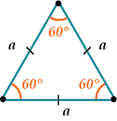
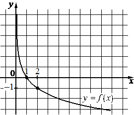

Все задания взяты с сайта ФГБНУ «ФИПИ» (https://fipi.ru/)
-
АлгебраПоказания счётчика электроэнергии 1 апреля составляли 79 621 кВт⋅ч , а 1 мая — 79 821 кВт⋅ч . Сколько нужно заплатить за электроэнергию за апрель, если 1 кВт⋅ч электроэнергии стоит 4 руб. 50 коп.? Ответ дайте в рублях.
-
Уравнения и неравенстваа) Решите уравнение
б) Найдите все корни этого уравнения, принадлежащие отрезку -
ФункцииНа рисунке изображён график функции вида . Найдите значение